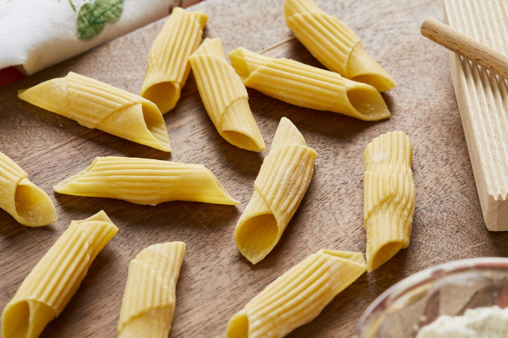

Pasta Recipe

Ingredients
- 200g pasta (spaghetti or your choice)
- 1 tablespoon olive oil
- 2 cloves garlic (minced)
- 1 cup mixed vegetables (carrots, bell peppers, broccoli)
- 1/2 cup pasta sauce (tomato or your choice)
- Salt and pepper to taste
- Grated Parmesan cheese (optional)
- Fresh basil leaves (for garnish)
Instructions
- Boil a large pot of salted water and cook the pasta according to package instructions until al dente.
- In a pan, heat olive oil over medium heat. Add minced garlic and sauté until fragrant.
- Add the mixed vegetables to the pan and cook for about 5 minutes until tender.
- Stir in the pasta sauce and cooked pasta. Mix well to combine.
- Season with salt and pepper to taste.
- Serve hot, garnished with grated Parmesan cheese and fresh basil leaves.
Dietary Restrictions
This recipe is vegetarian and can be made vegan by omitting the cheese and using a vegan pasta sauce.
Back to Recipes